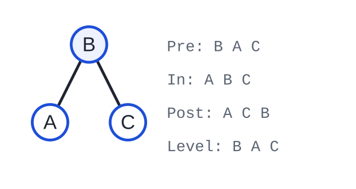

Überblick › LB 2/3 Datenstrukturen
3.6 Traversierung
Wie findet dein Rechner alle Dateien namens „referat.docx“ in allen Unterordnern? Er muss den Verzeichnisbaum systematisch Knoten für Knoten besuchen, ohne einen zu vergessen oder doppelt anzusehen.
Schritt 1: Vier Reihenfolgen
Einen Baum kann man in verschiedenen Reihenfolgen durchlaufen. Bei den drei Tiefensuchen entscheidet nur, wann der Knoten selbst drankommt: vor seinen Teilbäumen (Pre), zwischen ihnen (In) oder danach (Post). Die Breitensuche geht dagegen Ebene für Ebene. Achte im Video auf die Nummern an den Knoten.

Zum Nachlesen:
Tiefensuche (DFS – depth-first search)
Die Tiefensuche ist eine Methode zur Traversierung von Bäumen oder Graphen, bei der man zuerst so weit wie möglich absteigt, bevor man zurückkehrt und den nächsten Zweig untersucht. Bei Binärbäumen unterscheidet man drei Varianten, je nachdem, wann der aktuelle Knoten verarbeitet wird:
- In-Order-Traversierung: zuerst der linke Teilbaum, dann der aktuelle Knoten, zuletzt der rechte Teilbaum.
- Pre-Order-Traversierung: zuerst der aktuelle Knoten, dann der linke Teilbaum, zuletzt der rechte Teilbaum.
- Post-Order-Traversierung: zuerst der linke Teilbaum, dann der rechte Teilbaum, zuletzt der aktuelle Knoten.
Breitensuche (BFS – breadth-first search)
Die Breitensuche ist eine Methode zur Traversierung von Bäumen oder Graphen, bei der zuerst alle Knoten einer Ebene besucht werden, bevor man zur nächsten Ebene übergeht. Bei Bäumen ist die gängigste Variante die Level-Order-Traversierung. Sie wird mit einer Schlange (Queue, siehe Seite 3.2) umgesetzt, die Tiefensuche dagegen rekursiv oder mit einem Stapel (siehe Seite 3.3).
Die Varianten haben unterschiedliche Anwendungen und werden je nach Problem ausgewählt: In-Order liefert bei Suchbäumen die sortierte Reihenfolge, Pre-Order eignet sich zum Kopieren oder Ausgeben einer Struktur, Post-Order zum Löschen oder zum Berechnen von Ordnergrößen (erst die Kinder, dann der Elternknoten), Level-Order zum Finden des nächstgelegenen Knotens.
Kurz geprüft 1: Vier Reihenfolgen an vier Knoten AFB I
D
/ \
B F
/
AGib Pre-, In-, Post- und Level-Order dieses Baums an.
Lösung zeigen
Pre-Order: D, B, A, F · In-Order: A, B, D, F · Post-Order: A, B, F, D · Level-Order: D, B, F, A. Hier unterscheiden sich Pre- und Level-Order: Nach B geht die Tiefensuche erst zu A hinunter, die Breitensuche erst zu F hinüber.
Weiter mit Schritt 2: Der Baum in Python →
Schritt 2: Der Baum in Python
Diesmal bekommt der Konstruktor die Kinder gleich mit: Knoten(wert, links=None, rechts=None). So lässt sich ein ganzer Baum in einer einzigen Anweisung bauen, Knoten in Knoten. Achte im Video auf die kurze Erklärung zu Standardwerten und darauf, in welcher Reihenfolge Python die verschachtelten Aufrufe auswertet.
Jetzt du – mittippen: Lege 2_baeume/traversierung.py an und tippe den Code aus dem Video ab: die Klasse Knoten. Starte mit F5 und probiere in der Kommandozeile aus: blatt = Knoten(3). Danach committen, z. B. 3.6 Schritt 2: Knoten angelegt.
Kurz geprüft 2: Knoten in Knoten AFB I
Schreibe den Baum aus Kurz geprüft 1 als eine Anweisung b = Knoten(…). Was liefert für den Baum aus dem Video baum.rechts.links?
Lösung zeigen
b = Knoten("D", Knoten("B", Knoten("A")), Knoten("F")) – A ist das linke Kind von B, also das zweite Argument. baum.rechts ist die 15, und sie hat links kein Kind: None.
Weiter mit Schritt 3: In-Order Schritt für Schritt →
Schritt 3: In-Order Schritt für Schritt
Die drei Tiefensuchen sind rekursive Funktionen mit derselben Form: Ein leerer Teilbaum (None) liefert die leere Liste, sonst werden die Ergebnisse für links, den Knoten und rechts mit + aneinandergehängt. Im Video verfolgst du in_order am kleinen Baum aus Beispiel 1 mit dem Aufrufstapel – wie bei hoehe auf Seite 3.4. Achte darauf, dass auch None einen eigenen Aufruf bekommt.
Jetzt du – mittippen: Ergänze in 2_baeume/traversierung.py den Code aus dem Video: die Funktionen pre_order, in_order und post_order. Starte mit F5 und probiere in der Kommandozeile aus: klein = Knoten("B", Knoten("A"), Knoten("C")) · in_order(klein) · pre_order(klein). Danach committen, z. B. 3.6 Schritt 3: pre_order, in_order, post_order ergänzt.
Kurz geprüft 3: Aufrufe zählen AFB II
Wie oft wird in_order insgesamt aufgerufen, wenn du in_order(klein) für den Baum B mit den Kindern A und C startest? Wie viele davon bekommen None?
Lösung zeigen
7-mal: je ein Aufruf für B, A und C und vier Aufrufe mit None – links und rechts von A sowie links und rechts von C. Allgemein bekommt jeder Knoten zwei Aufrufe für seine Kinder, auch wenn sie fehlen.
Danach: Aufgabe 3.6.1 – Pre-, In- und Post-Order am größeren Baum von Hand.
Weiter mit Schritt 4: Level-Order →
Schritt 4: Level-Order mit einer Warteschlange
Für die Breitensuche braucht man eine Schlange (Seite 3.2): vorn einen Knoten entnehmen und ausgeben, seine Kinder hinten anhängen. Weil Kinder hinten anstehen, kommen alle Knoten einer Ebene vor der nächsten dran. Als Schlange nehmen wir die Klasse Queue aus Seite 3.2: enqueue stellt hinten an, dequeue nimmt vorn heraus, beides in O(1). Lege dazu deine Datei queue_knoten.py aus 1_listen in den Ordner 2_baeume (oder lade sie herunter: queue_knoten.py). Stehen in deiner Datei unten noch Testzeilen, müssen sie unter if __name__ == "__main__": stehen – sonst laufen sie bei jedem import mit (Abschnitt „import“ auf Seite 3.2). Warum keine einfache Liste? Das klärt der Vergleich unter Beispiel 2. Achte im Video darauf, was mit den None-Einträgen in der Schlange passiert.
Jetzt du – mittippen: Ergänze in 2_baeume/traversierung.py den Code aus dem Video: die Funktion level_order. Starte mit F5 und probiere in der Kommandozeile aus: level_order(baum). Danach committen, z. B. 3.6 Schritt 4: level_order ergänzt.
Zum Nachlesen stehen alle vier Traversierungen mit dem Ablauf von level_order in Beispiel 2:
Vergleich: Queue aus 3.2 oder einfache Liste als Schlange?
Bis vor Kurzem stand hier eine Python-Liste als Schlange. Wir nehmen jetzt die Queue aus Seite 3.2 – hier siehst du beide Fassungen und warum.
Fassung mit Liste (liefert dasselbe Ergebnis):
def level_order_liste(wurzel):
ergebnis = []
schlange = [wurzel]
while len(schlange) > 0:
k = schlange.pop(0) # vorn entnehmen: alle anderen rücken nach
if k is not None:
ergebnis.append(k.wert)
schlange.append(k.links)
schlange.append(k.rechts)
return ergebnisListe mit append und pop(0) | Queue aus 3.2 (enqueue, dequeue) | |
|---|---|---|
| Laufzeit je Entnahme | O(n): Alle übrigen Einträge rücken eine Stelle nach vorn. | O(1): Nur __head wird umgesetzt. |
| ganze Traversierung | bis O(n²) bei n Knoten | O(n) |
| Aufwand | keine Zusatzdatei, sofort hingeschrieben – auch auf Papier | braucht queue_knoten.py im Ordner und eine Import-Zeile |
| Lesbarkeit | Man muss wissen, dass pop(0) „vorn“ bedeutet. | Die Namen sagen, was passiert: hinten anstellen, vorn entnehmen. |
| Fehlerquelle | Wer versehentlich pop() schreibt, hat einen Stapel – und eine Tiefensuche. | Es gibt nur die Operationen einer Schlange (Kapselung). |
| im Debugger | Der ganze Inhalt ist auf einen Blick sichtbar. | Man sieht nur ein Queue-Objekt; den Inhalt erreicht man über __head und next. |
| kleine Bäume | oft sogar schneller (das Nachrücken läuft intern in C) | etwas langsamer, weil jeder Knoten ein eigenes Objekt ist |
Fazit: Beide Fassungen sind richtig. Die Liste ist bequem für kleine Beispiele. Wer eine Laufzeit wie O(n) angeben will, braucht aber eine Schlange, die vorn in O(1) entnimmt – also die Queue aus 3.2. In der Praxis nimmt man in Python dafür collections.deque (siehe 3.2).
Kurz geprüft 4: Die Schlange führen AFB I
Führe level_order für den Baum aus Kurz geprüft 1 (D mit den Kindern B und F, A links unter B) von Hand aus. Wie sehen schlange und ergebnis aus, nachdem die ersten zwei Knoten entnommen wurden?
Lösung zeigen
Schlange von vorn nach hinten. Start: D. D entnehmen: ergebnis = [D], Schlange: B, F. B entnehmen: ergebnis = [D, B], B stellt A und None hinten an, also Schlange: F, A, None.
Danach: Aufgabe 3.6.4 und Aufgabe 3.6.5 – Tiefen- und Breitensuche in Anwendungen.
Praxisbezug: Traversierung im Dateisystem und in der Webentwicklung
Alltag: Die Suche im Explorer oder im Finder durchläuft den Verzeichnisbaum mit einer Tiefensuche. Die Anzeige „Größe des Ordners“ ist eine Post-Order-Traversierung: Erst werden die Größen aller Unterordner berechnet, dann addiert.
Beruf: Jede Webseite ist intern ein Baum (das DOM). Frontend-Entwicklerinnen und -Entwickler durchlaufen ihn, um z. B. alle Bilder ohne Alternativtext zu finden. Suchmaschinen-Crawler besuchen Webseiten per Breitensuche, damit nah an der Startseite liegende Seiten zuerst indiziert werden.
Hinweis: Python-Dateien zum Herunterladen
- bintree_traversal.py – binärer Suchbaum mit rekursivem Einfügen, Pre-Order- und In-Order-Ausgabe
- baum_einfuehrungsstunde_leistungskurs.py – allgemeiner Baum mit Tiefensuche und einem Versuch einer Breitensuche (wird in Aufgabe 3.6.8 untersucht)
Das Wichtigste
Traversierung: Systematisches Durchlaufen einer Datenstruktur wie eines Baums oder Graphen, bei dem jedes Element genau einmal besucht wird.
Tiefensuche (DFS): Erst so weit wie möglich in die Tiefe, dann zurück. Beim Binärbaum: Pre-Order (Knoten – links – rechts), In-Order (links – Knoten – rechts), Post-Order (links – rechts – Knoten).
Breitensuche (BFS): Ebene für Ebene (Level-Order).
Grundaufgaben
Aufgabe 3.6.1: Baumtraversierung AFB I
Gegeben ist folgender binärer Baum:
10
/ \
5 15
/ \ \
3 7 20- Führe eine Pre-Order-Traversierung dieses Baums durch.
- Führe eine In-Order-Traversierung dieses Baums durch.
- Führe eine Post-Order-Traversierung dieses Baums durch.
Aufgabe 3.6.2: Suche in einem binären Suchbaum AFB I–II
Gegeben ist der folgende binäre Suchbaum:
8
/ \
3 10
/ \ \
1 6 14
/ \ /
4 7 13- Suche nach der Zahl 6 im Baum und beschreibe den Suchvorgang.
- Suche nach der Zahl 9 im Baum und beschreibe, was passiert, wenn das Element nicht gefunden wird.
- Die binäre Suche kann in einem Suchbaum oder in einer sortierten Liste umgesetzt werden. Beschreibe die binäre Suche und erkläre, warum sich die Suche im binären Suchbaum und in der Liste stark ähneln. https://www.inf-schule.de/algorithmen/standardalgorithmen/suchen/binsuche
- Bestimme die Komplexitätsklasse der Suche in binären Suchbäumen.
Das kann ich jetzt
Grau steht, was der Lehrplan verlangt, darunter, was das für dieses Thema konkret heißt. Hake einen Punkt ab, wenn er in deinem Hefter zusammengefasst ist und du ihn ohne Hilfe kannst. Wie du ihn zusammenfasst, entscheidest du selbst. Die Haken speichert nur dein Browser.
Lehrplan LB 2 Traversierung (Kennen algorithmischer Problemlösestrategien)